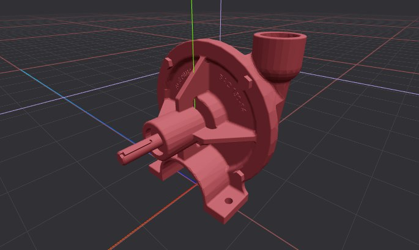
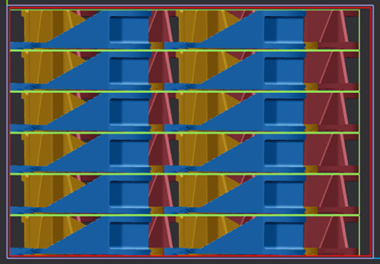

«Плоские промежуточные слои»
Тип упаковывания «Плоские промежуточные слои» подразумевает укладку продукции слоями и наличие разделительных жестких горизонтальных плоскостей между слоями, что обеспечивает высокую стабильность упаковки. Расположение продукции будет максимально регулярным, что позволит легко загружать и выгружать их.

Пример упаковки по типу «Плоские промежуточные слои»:
Исходная продукция
Один из результирующих вариантов укладки

Параметр «Толщина прослойки» определяет толщину промежуточных горизонтальных слоев:
Результат, когда параметр равен 2 мм (вид сбоку)
Результат, когда параметр равен 10 мм (вид сбоку)